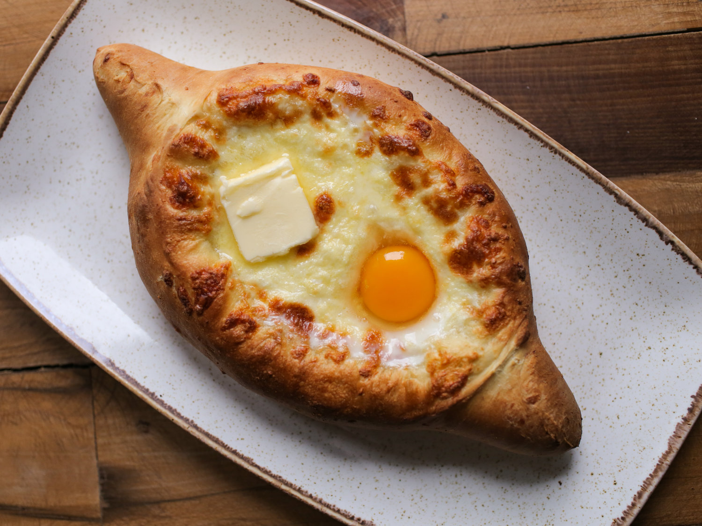

Khachapuri Recipe

Description
Adjarian Khachapuri is a traditional Georgian dish from the coastal region of Adjara,
famous for its distinctive boat shape and rich, indulgent filling. Baked to golden perfection,
the bread is filled with a blend of tangy cheeses, topped with a raw egg yolk and a pat of butter just before serving.
As the cheese bubbles and the crust crisps, diners mix the yolk and butter into the hot cheese,
then tear off pieces of the crust to scoop up the molten mixture — a warm,
interactive experience that embodies Georgian hospitality.
Historically, the shape is said to reflect the boats of local fishermen,
with the egg yolk symbolizing the setting sun over the Black Sea.
More than just comfort food, Adjarian Khachapuri represents the soul of
Adjara — a flavorful blend of tradition, geography, and heartfelt generosity.
Ingredients (Makes 2 khachapuri)
For the dough:
- 2½ cups (300 g) all-purpose flour
- 1 tsp salt
- ½ tsp sugar
- 1 tsp dry yeast
- ¾ cup (180 ml) warm water
- 2 tbsp vegetable oil (or melted butter)
For the filling:
- 2 cups (200–250 g) grated sulguni
cheese (or mix with mozzarella and
feta if unavailable)
- 1 cup (100 g) grated imeruli
cheese (or use more feta/mozzarella)
- 2 egg yolks
- 2 tbsp butter
Instructions
- Make the Dough:
In a bowl, mix warm water, sugar, and yeast.
Let it sit for 10 minutes until frothy.
Add flour, salt, and oil, then knead into a smooth dough.
Cover and let rise in a warm place for 1–1.5 hours,
until doubled.
- Preheat & Shape:
Preheat oven to 220°C (425°F).
Punch down the dough and divide it into two pieces.
Roll each into an oval about 20–25 cm long.
Roll the long edges inward to form a boat shape,
pinching the ends to seal.
- Add Cheese:
Fill the center of each “boat” with the cheese mixture.
Bake for 12–15 minutes, or until the crust is golden and
cheese is bubbling.
- Add Egg & Butter:
Remove from oven, make a small well in the cheese, and
carefully drop in an egg yolk. Add a small piece of butter.
Return to oven for 2–3 minutes — just enough to
slightly set the yolk.
- Serve Hot:
Mix the egg and cheese at the table, and tear off pieces of
crust to scoop and enjoy.
Home